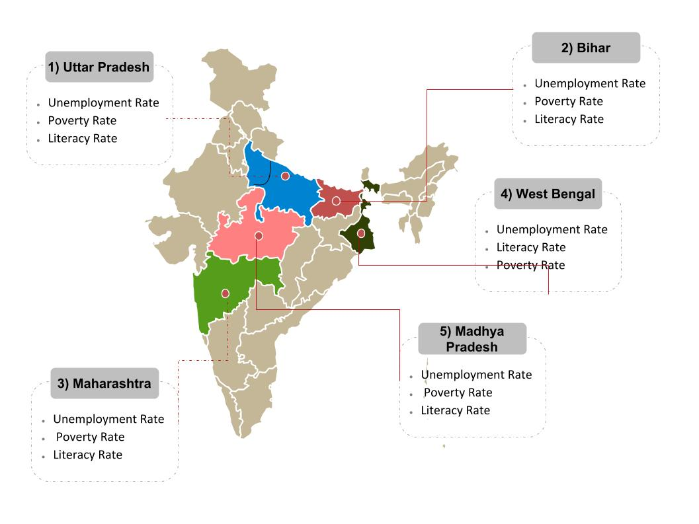

| MAP SHOWING HIGH DENSITY ZONES IN INDIA FOR MURDER CASES | LIST OF STATES ACCORDING TO MURDER CASES REGISTERED IN 2016 | ||
|  | 1> UTTAR PRADESH 16.67 % | 2> BIHAR 8.80 % | 3> MAHARASHTRA 7.84 % |
| 4> WEST BENGAL 6.97 % | 5> MADHYA PRADESH 6.83 % | 6> TAMIL NADU 5.47 % | |
| 7> KARNATAKA 5.36 % | 8> RAJASTHAN 5.29 % | 9> JHARKHAND 5.16 % | |
| 10> ODISHA 4.53 % | 11> ASSAM 3.92 % | 12> ANDHRA PRADESH 3.83 % | |
| 13> GUJARAT 3.82 % | 14> HARYANA 3.60 % | 15> CHHATTISGARH 3.26 % | |
| 16> PUNJAB 2.63 % | 17> DELHI 1.80 % | 18> KERALA 1.04 % | |
| 19> UTTARAKHAND 0.66 % | 20> TRIPURA 0.49 % | 21> JAMMU & KASHMIR 0.48 % | |
| 22> MEGHALAYA 0.37 % | 23> HIMACHAL PRADESH 0.34 % | 24> MANIPUR 0.27 % | |
| 25> ARUNACHAL PRADESH 0.16 % | 26> NAGALAND 0.12 % | 27> GOA 0.10 % | |
| 28> MIZORAM 0.10 % | 29> SIKKIM 0.06 % | ||